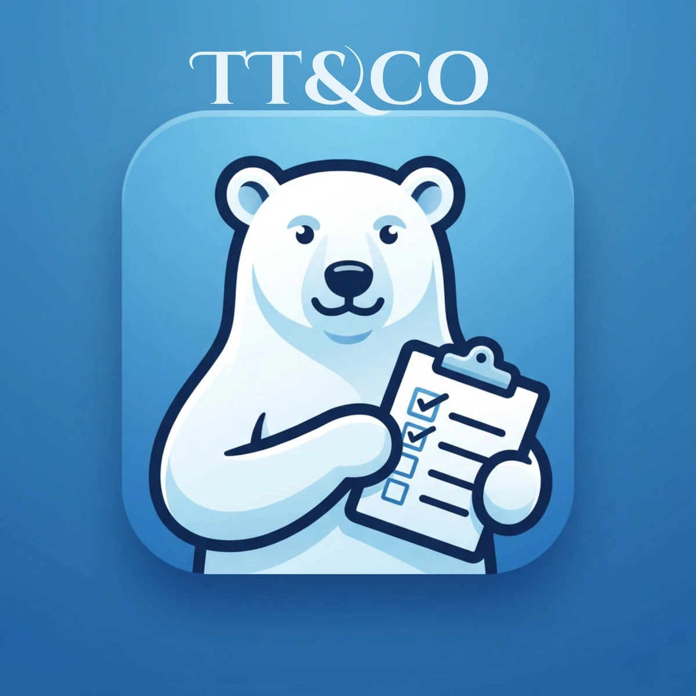
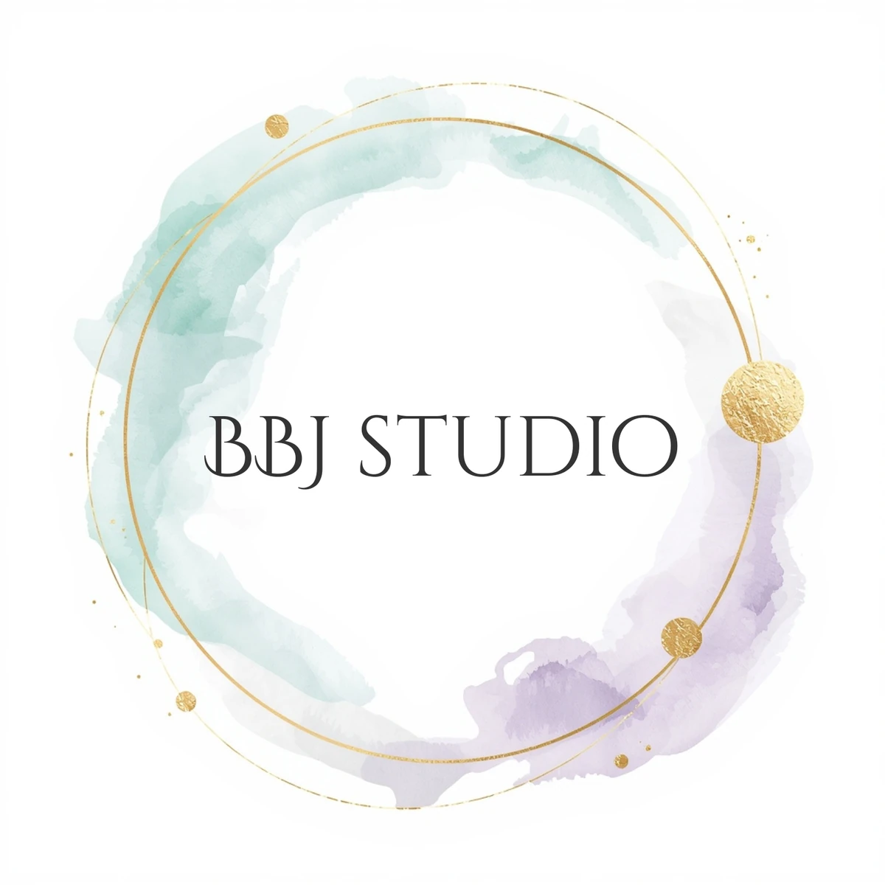

Hi, I'm Josh.
Built By Josh Studio is the parent studio I founded in 2025 to publish a small set of well-designed digital products under one roof. The work splits across two distinct lines, by design — productivity tools that solve a real problem, and art that means something on a wall. Each line is its own brand, with its own voice and visual identity, but everything ships from the same studio with the same standard: real-world tested, no bloat, no filler.
I run all of it solo. That's not a constraint — it's the point. Every workbook formula, every Notion module, every zodiac palette is decided by one person who actually uses the thing. There's no committee, no roadmap-by-vote, no "minimum viable product" with broken corners. The studio is small on purpose so the work can be opinionated and complete.
The Two Brands

Tynkr Tools & Co
Founded 2026. Notion OS templates and Excel / Google Sheets workbooks for budgeting, planning, and creator business management. The productivity-first arm of the studio.

Built By Josh Studio (Zodiac Art)
The art arm. Western and Chinese zodiac digital prints, oil-landscape series, and Lunar New Year landscape collections — designed to print, frame, and last.
Same studio, two distinct product lines. They share the brand voice — useful, well-built, no nonsense — but the audience and use case are entirely separate.
Beyond the Studio
I write fiction under the same roof. Overlayed Echoes is my novel — a story project that runs alongside the digital products work. The studio's voice carries over: I'd rather write the kind of book I'd want to read than chase trends.
I also publish on YouTube as Tales of Ink & Shadows Studio — a creative channel covering the writing, the studio process, and the occasional rabbit hole.
Where the Studio Lives
Built By Josh Studio is based in Kansas. All products are digital and delivered as instant downloads. Customer support, pre-purchase questions, and partnership inquiries all come to one inbox: josh@builtbyjoshstudio.com. Response time is typically 1–2 business days.
Tynkr Tools & Co products are sold on Etsy and on this site directly. Zodiac art prints are on the BBJ Studio Etsy shop. Both shops handle digital delivery automatically — no waiting, no accounts.
Connect With the Studio
Find the studio elsewhere on the web: